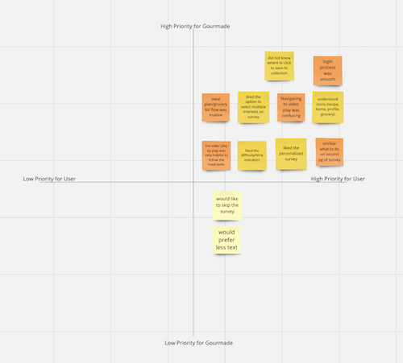

Gourmade
Overview
Members: Gabriella Boozer, Kasandra Duckett, Rachel Bell, Maura Jarman
Project title: Gourmade: Cooking App Case Study
Project description: Our goal is to create a cooking app that is personalized to each user. The user will fill out a short survey that allows the app to learn about their cooking habits, needs, likes, and dislikes. Afterwards, the app will generate the user a weekly meal plan complete with grocery list, schedule, cost breakdown, and videos. There will be a discover page that allows the user to gain inspiration and save recipes for future use. The idea is to remove the barriers to cooking at home and empower users to cook in a way that fits their lifestyle.

User-focused inspiration/motivation (why do you feel it is valuable?): We want to make cooking easier for users by taking the mental load off cooking. It can be difficult to fit menu planning, grocery shopping, and cooking into the work day. Our app would be your cooking assistant creating your grocery list and breaking down your cooking schedule. Bottom line, we want to make cooking easy and fun.
Shared software or tools group will use: Miro, Figma, Google Slides, Google Doc, Google Forms, Trello, Zoom, Canva
User Research Plan
Background: Cooking often requires lots of time, planning, skill, and energy. Due to people’s busy schedules, it can be difficult to prioritize cooking at home, leading to feelings of frustration and alternative forms of feeding oneself such as eating out.
To help users cut the cost of eating out and ordering delivery.
To provide users with how-to cooking techniques with video clips.
Making good home cooking more accessible.
To provide easy and quick prep-timed meals.
To provide possible meals with ingredients users already have.
Whats their comfort level with technology?
Whats their comfort/experience level with cooking?
What space and kitchen equipment is accessible to them?
What do they feel like their current barriers are to cooking at home?
Where do they go or what services do they use when thinking about cooking at home?
People who cook at least 1 meal every day
Affinity Diagram and Empathy Map


User Persona
Name: Isabel Smith
Background:
Isabel is a 29 year old, single, news desk editor at the Washington Post, in Washington, DC. She moved to the DC area to study Journalism at the University of Maryland and has made it a home post graduation. She has an active and fulfilling work and social life. She consumes a dairy free diet, and needs a cup of coffee every morning.
Goals:
Pre-plan meals for the upcoming week
Eat out less during the work week
Grow her cookware collection
Have more nutritional balanced diet
Frustrations:
The increasing cost of food at the grocery store, and food delivery services
The available space in her studio apartment
Maintaining time management with life and work responsibilities and interests
Difficulty keeping a consistently healthy and well balanced diet
Maintaining dietary restrictions
Interests:
Cycling
Fresh food markets
Beach vacations
Trying new foods
Going out to eat with friends
Active on TikTok, Twitter, Instagram, and LinkedIn
Favorite Cooking outlets:
TikTok
Accounts from IG ‘for you’ page
User Insight Statement
Isabel is a young professional with a busy schedule who needs to be able to cook meals in 30 minutes or less because she has a busy work schedule and active social life which limits the time she can spend in the kitchen.Isabel is a young professional with a busy schedule and a tight budget, she needs to be able cook meals that are within her budget in 30 minutes or less so she can spend more of her time and money with her friends.
Isabel is a millennial who is new to cooking and needs to have access to recipe videos and tutorials so that she can feel more confident in the kitchen and learn new skills.
Isabel is a millennial who is looking to prioritize her health and learn new cooking skills. She needs to have access to recipe videos and tutorials so that she can feel more confident in the kitchen and on her health journey.
Problem Statement
We have observed that young working professionals with limited time need better methods to plan their meals so they can grow their comfortability in the kitchen and eat healthier, while saving money. How might we provide personalized recipes and meal plans that fit within their lifestyle, health goals, and budget?
Our goal is to create a personalized cooking experience for each user. Through a quick survey and feedback learning our app learns about the users' cooking habits, needs, likes, and dislikes. Our app generates a weekly meal plan complete with grocery list, schedule, cost breakdown, and videos. A discover page inspires user's cooking and saves recipes for future use. We remove the barriers to home cooking and empower users to cook in a way that fits their lifestyle.

Add directions to second page of survey
Simplify recipes page (cut down on number seen)
Add collections icon to the recipes on the recipe page
Refine the collections options to just "my favorites"
Add a "my favorites" tab on the profile page
Change the video icon positioning on the recipe page
Change verbiage on "meal plan sent" to "meal plan ready or meal plan in xxx"
Do not have logo on every page, for example on For You Page
Back button on meal plans
Add cooking instructions in meal plan section
Add navigation to all tabs on every screen
Make clickable actions on flow blue (excluding navigation bar)
Wireframe Link Presentation Link